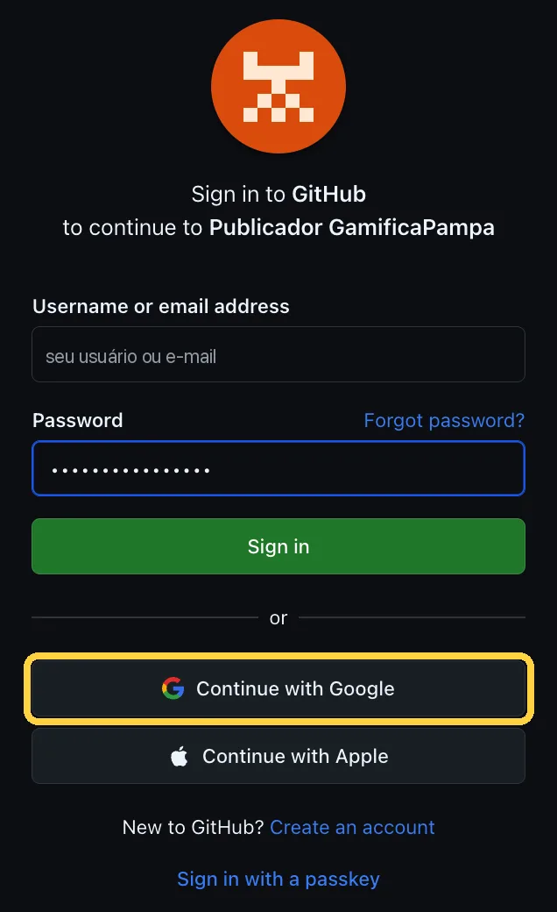
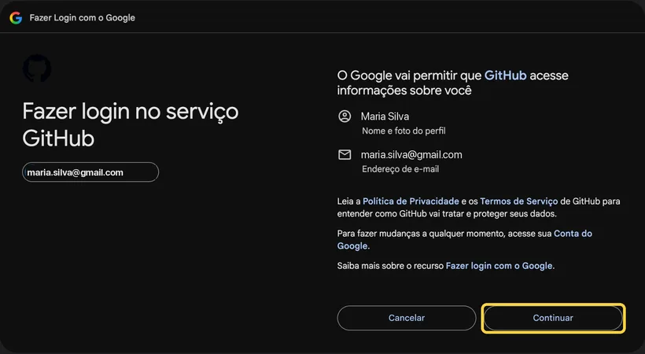
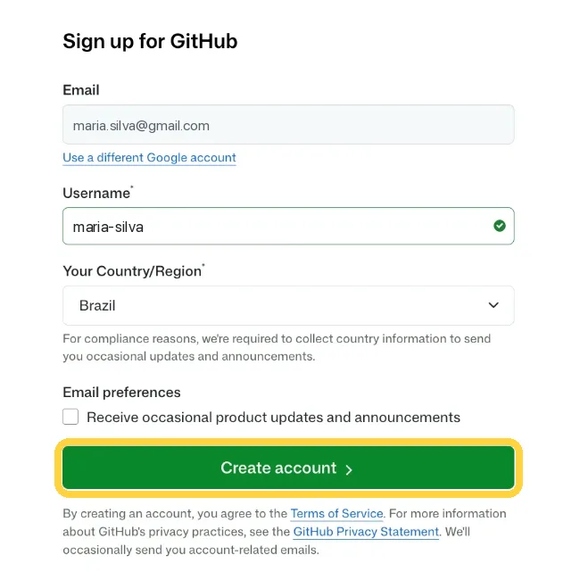
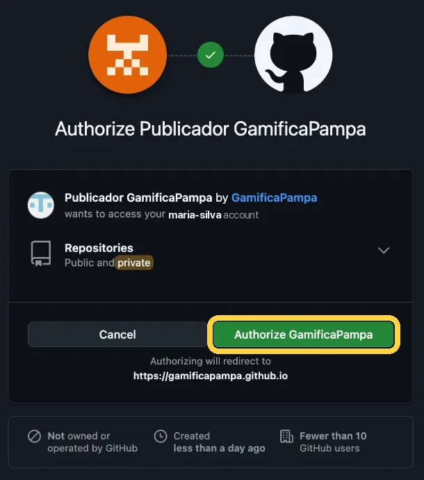
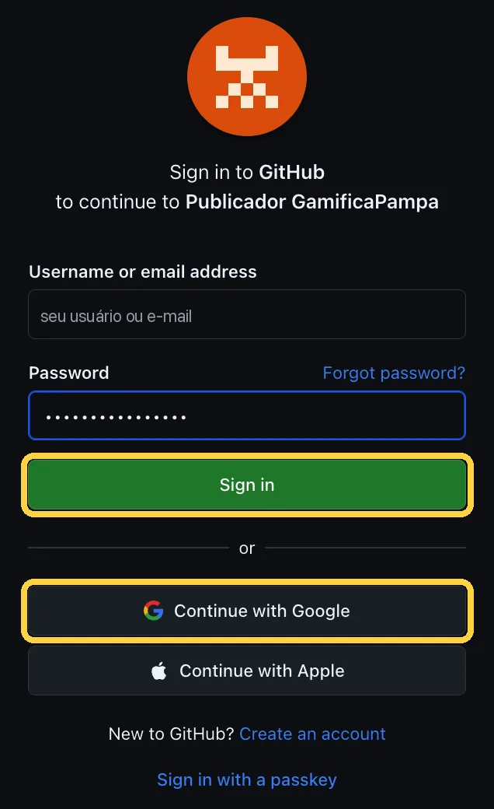
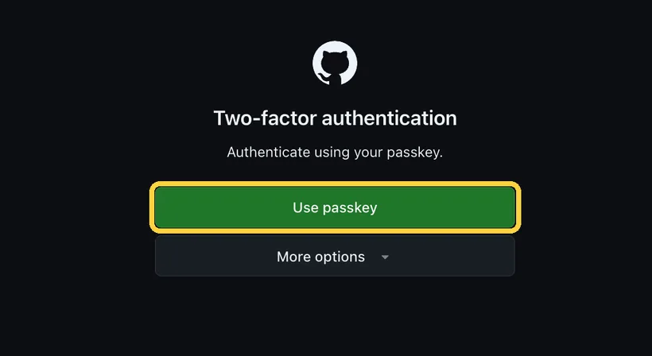

Publicar meu jogo
Um link e um QR Code para a turma
- 1Entrar
- 2Enviar o jogo
- 3Jogar

Oi! Eu coloco o seu jogo na internet, com um link e um QR Code para a turma. Primeiro, entre com o GitHub.
Meus jogos
Os jogos publicados neste aparelho. Para melhorar um sem mudar o link nem o QR Code, toque em Versão nova.
Envie o jogo
Não precisa de conta: dê um nome, envie o arquivo e ganhe o link e o QR Code na hora.
- 1
Copie o código do jogo que está no ar.
- 2+
No ChatGPT, abra o Canvas (no + da caixa de mensagem), cole o código e envie.
- 3Aa
Na mensagem seguinte, peça só o que quer mudar. Por exemplo: Acrescente uma fase mais difícil e mantenha o resto do jogo.
- 4
Quando ficar bom, envie o jogo novo aqui embaixo, pelo arquivo ou colando o código.
Não gostou da última versão? As anteriores ficam guardadas, e você pode voltar para a de .
Prefiro colar o código do jogo
Publicou em outro aparelho?
Com o link do jogo e o código de edição que você anotou, o jogo aparece em Meus jogos também aqui.
Prefere guardar o jogo na sua conta do GitHub?
Não quer criar conta no GitHub?
Você saiu do publicador. O navegador ainda está conectado ao GitHub. Se este computador é da escola ou de outra pessoa, saia também do GitHub: senão, quem tocar em Entrar com o GitHub entra na sua conta.
Na página que abrir, toque em Sign out (sair).
Sair também do GitHubEntre com o GitHub
O GitHub é um site gratuito que guarda páginas na internet. O seu jogo fica na sua conta, e você entra uma vez só.
Já publicou um jogo? Entre do mesmo jeito para ver os seus em Meus jogos e fazer uma versão nova, com o mesmo link e o mesmo QR Code.
Como entrar, passo a passo
- 1
Toque no botão Entrar com o GitHub, aqui em cima. A página do GitHub abre em inglês.
- 2G
Na tela Sign in to GitHub (entrar no GitHub), toque em Continue with Google (continuar com o Google). Não precisa criar senha.

- 3@
O Google pergunta qual conta usar. Escolha a sua e toque em Continuar.

- 4Aa
Na tela Sign up for GitHub (cadastrar-se no GitHub), o e-mail já vem preenchido. Complete assim:
- Username (nome de usuário): um nome curto, sem espaços, como maria-silva. Ele aparece no link dos seus jogos. O círculo verde mostra que o nome está livre.
- Your Country/Region (país ou região): Brazil.
- Email preferences (preferências de e-mail): pode deixar desmarcado.
Toque no botão verde Create account (criar conta). Se aparecer um aviso de cookies no rodapé, toque em Reject (recusar).

- 5
Por fim, toque no botão verde Authorize GamificaPampa (autorizar o GamificaPampa). Você volta para esta página, pronto para enviar o jogo.

- 1
Toque no botão Entrar com o GitHub, aqui em cima. Se você já estiver conectado ao GitHub neste aparelho, pule para o passo 4.
- 2G
Na tela Sign in to GitHub (entrar no GitHub), entre do mesmo jeito que criou a conta:
- Com e-mail e senha, preencha Username or email address (usuário ou e-mail) e Password (senha) e toque em Sign in (entrar).
- Com o Google, toque em Continue with Google (continuar com o Google) e escolha a sua conta.

- 3?
Algumas contas pedem uma confirmação a mais, chamada Two-factor authentication (verificação em duas etapas). Se ela aparecer, confirme do jeito que você costuma usar, como a chave de acesso (Use passkey), um código do aplicativo ou um SMS. Em More options (mais opções) ficam as outras formas.

- 4
Na primeira vez, toque no botão verde Authorize GamificaPampa (autorizar o GamificaPampa). Nas próximas, o GitHub pula essa tela e você volta direto para cá.
Por que o GitHub fala em repositórios privados? O GitHub exige essa permissão para ligar o site do jogo. O Publicador usa ela apenas para criar o espaço de cada jogo que você enviar, e você pode cancelar o acesso quando quiser em github.com, no menu Settings, em Applications.
Meus jogos
Para melhorar um jogo sem mudar o link nem o QR Code, toque em Versão nova.
Envie o jogo,
- 1
Copie o código do jogo que está no ar.
- 2+
No ChatGPT, abra o Canvas (no + da caixa de mensagem), cole o código e envie.
- 3Aa
Na mensagem seguinte, peça só o que quer mudar. Por exemplo: Acrescente uma fase mais difícil e mantenha o resto do jogo.
- 4
Quando ficar bom, envie o jogo novo aqui embaixo, pelo arquivo ou colando o código.
Não gostou da última versão? O GitHub guarda as anteriores, e você pode voltar para a de .
Prefiro colar o código do jogo
- Preparando o espaço do jogo
- Enviando o jogo
- Colocando o jogo no ar
Seu jogo está no ar!
O GitHub está montando o site. Leva cerca de um minuto.
Anote o código de edição deste jogo:
Ele aparece só agora. Fica guardado neste aparelho, mas, para fazer uma versão nova em outro computador ou celular, você vai precisar dele.